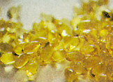
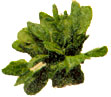

According to Richard Firshein, D.O., author of The Neutraceutical Revolution (Putnam 1998), many of the ailments from which we suffer today including fatigue, asthma, diabetes and cancer can be prevented or treated with dietary changes and a core group of neutraceuticals. "There may be components of foods that prevent certain conditions and are useful in treating certain conditions," he says. "There are a number of issues which I think are very common and that people are concerned about, and there are supplements that I find to be most beneficial."
When shopping for supplements, it may be tempting to go for a bargain, but Firshein advises against cutting corners. "You get what you pay for. I recommend people stick with tried-and-true brands or get them from trusted sources, because there still is not the kind of standardization of supplements that will make it easy for people to make that decision."
Firshein cautions, too, against plunging into the world of natural remedies before seeking the advice of a physician. "There's no guarantee that if they talk to their doctor, their doctor's going to be familiar with all of these nutrients," he says. "But at least they can get a sense of the relative risks of taking a supplement or of not taking a particular treatment."
• A favorite among cardiologists, vitamin E is linked to a reduced risk of heart and cardiovascular disease. This vitamin works as an antioxidant, which eliminates free radicals, highly unstable molecules that wreak havoc in the body by attacking cell membranes. Vitamin E is found in nuts, seeds, whole grains, vegetable oils, egg yolks and leafy greens. For general health, 200-400 IU are recommended. Since the body has an easier time absorbing vitamin E from natural rather than synthetic supplements, look for those labeled d-alpha-tocopherol, as opposed to dl-alpha-tocopherol. Do not take vitamin E if you are on blood-thinning medication or take aspirin daily.
• Fatigue is a common complaint that can be blamed on stress, depres sion or a simple lack of sleep. Once your doctor rules out organic causes, such as a thyroid disease or adrenal insufficiency, there are a number of remedies for this ailment. The amino acid tyrosine, found in dairy and poultry, can help to restore the brain's levels of norepinephrine, a neurotransmitter that can be depleted by stress. Tyrosine
should only be taken during tunes of duress, as it can stress the kidneys: 500 to 2,000 mg/day. Coenzyme Q10, an antioxidant that can increase energy and fend off disease, can be found in fish, eggs, spinach, broccoli, red meat and peanuts, and in supplement form: 60-180 mg/day.
• Allergies are the bane of 40 to 60 million people in the U.S. Whether seasonal or chronic, allergies' impact can be lessened by a couple of supplements. Quercetin, a bioflavonoid responsible for red and blue pigments in plants, is an an tioxidant that works both as an anti-inflammatory and an antihistamine (300-600 mg/day). Stinging nettle, though a topical irritant, is an anti-inflammatory when taken internally (one 400 mg capsule every four hours).
• Pre-Menstrual Syndrome (PMS) and symptoms associated with menopause can be relieved by a number of supplements that contain natural estrogens. Black cohosh, a North American herb with a long tradition in folk healing, helps to bal ance hormonal levels: 500 o 1,000 mg/day for PMS, 500 to 2,000 for menopause. Red clover, as a tincture (20 drops a day in warm water) may diminish hot flashes. Magnesium, 200 mg/day, can relieve menstrual cramps and mood swings associated with PMS.
• Prostate problems are a major concern for men approaching middle age. Extract from the berries of the saw palmetto, a dwarf palm tree native to the Atlantic coast of the U.S., can reduce the symptoms of benign prostatic hypertrophy (BPH) and may reduce the risk of prostate cancer. Men over 50 or those with a family history of BPH should take 450 mg/day; 900-1,800 mg/day for those with BPH.
• Anxiety and depression can be debilitating problems requiring serious medication, but many people suffer from milder stress and low moods that can be lifted with regular exercise, meditation and neutraceutical supplements. Kava, a Polynesian herb, acts as an analgesic, a muscle relaxant and an anticonvulsant; it can be taken in capsule or tincture form, and should be taken only under a doctor's supervision: 50-100 mg, three to six times a day. Valerian, an herbal soother that has the unfortunate distinction of smelling like old socks, can help cure insomnia. For mild to moderate depression, St. John's wort has been found to be as effective as imipramine, a synthetic antidepressant, at 800 to 2,400 mg/day. St. John's wort is not without side effects, however, and can interfere with other medications.
• When bacteria in the digestive tract get out of balance due to a low-fiber diet, environmental stress or a round of antibiotics, any number of complications can result such as digestive problems, urinary tract infections and food allergies. Probiotics, such as L. acidophilus, help to keep unfriendly bacteria in check. Probiotics can be found in cultured milk products, such as yogurt; they also come by the billions in supplement form. A daily 4-ounce cup of yogurt is good for general health, but for specific disorders such as digestive discomfort, yeast infections, halitosis and lactose intolerance, between 1 and 4 billion organisms a day are recommended. Another friend of the intestinal tract is glutamine. The most abundant amino acid in the human body, it helps keep the intestinal lining healthy: 100 mg/day (optional).
• Some fats are more than good for us, they're essential to our health. In their absence we may experience dry skin, thinning hair, inflammatory diseases like arthritis and autoimmune diseases like lupus. Omega-3, found in salmon and mackerel and in flax seed oil, inhibits inflammation and thins the blood. Two or three 6-ounce servings of fatty fish per week, or one tablespoon a day of flaxseed oil, are recommended for general health.
• Many people with diabetes, heart disease, asthma and chronic fatigue syndrome have deficient levels of magnesium, which maintains the balance of calcium inside and outside cells. It can be found in wheat germ, bran, nuts, soybeans, whole oats, barley, leafy greens, corn and fish. As magnesium citrate: 100 to 250 mg/day.
For moreinformation, consult Dr. Firshein on the Web at www.drcity.com .
|
 |
 |
|
|
|
|
|